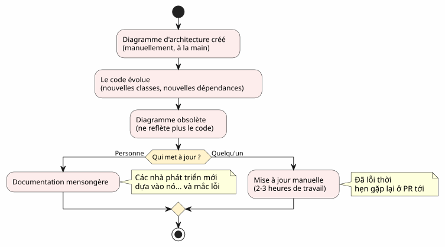
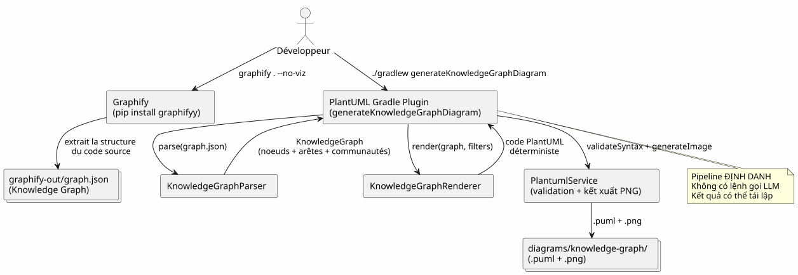
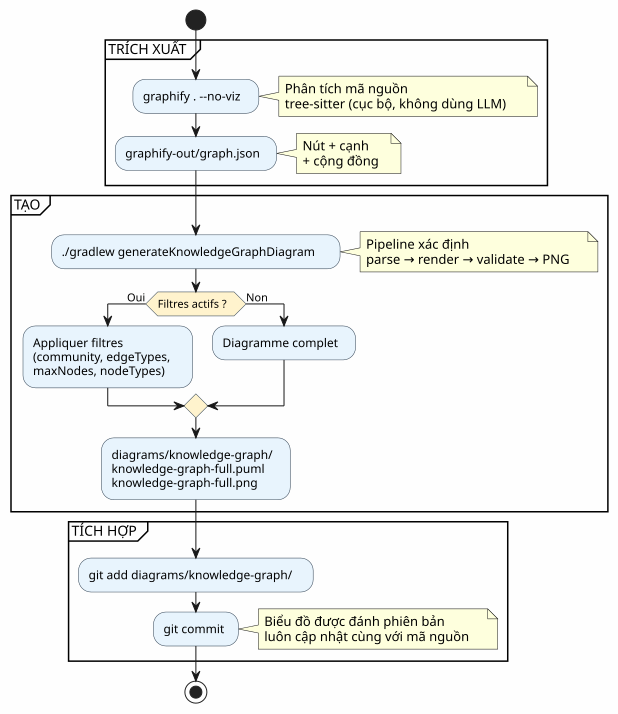
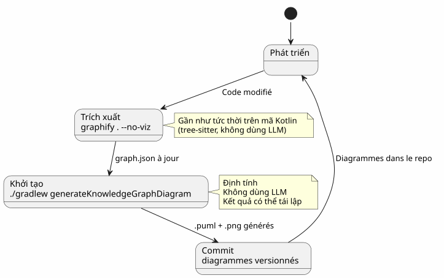
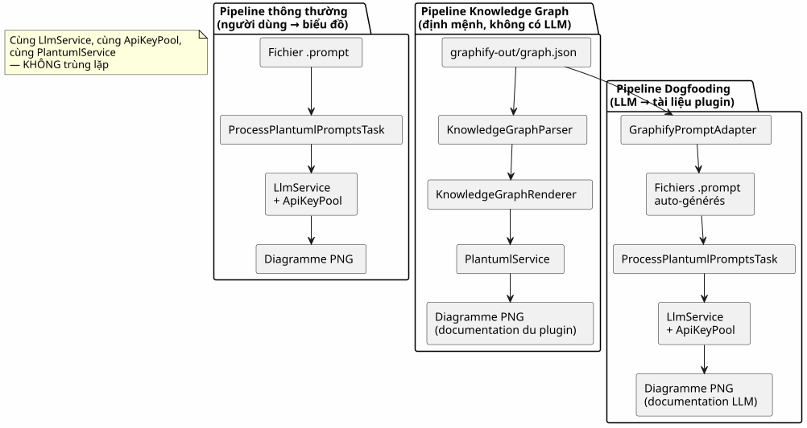
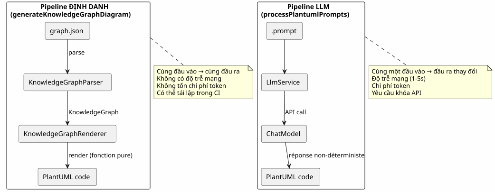
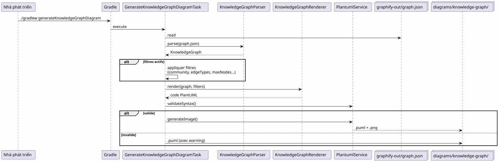
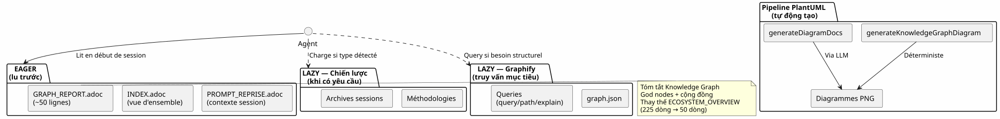
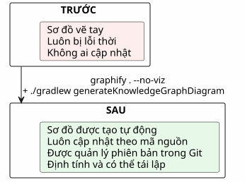

Tích hợp Graphify vào workflow Gradle: từ Knowledge Graph đến sơ đồ PlantUML chỉ với một câu lệnh
Đăng ngày 19 April 2026
- Vấn đề là: các sơ đồ luôn chậm hơn so với mã code
- Giải pháp: một pipeline tất định Knowledge Graph → PlantUML
- Bước 1: Cài đặt Graphify và trích xuất Knowledge Graph
- Bước 2: Plugin Gradle chuyển đổi Knowledge Graph thành PlantUML
- Bước 3: Sử dụng hằng ngày
- Pipeline hoàn chỉnh trong một workflow Gradle
- Dogfooding: plugin tự lập tài liệu cho chính nó
- Tại sao nó mang tính xác định (và tại sao điều đó lại quan trọng)
- Sơ đồ của chính pipeline
- Tích hợp vào quản trị dự án
- Chuẩn bị: checklist trong 5 phút
- Các bẫy và biện pháp giảm thiểu
- Kết quả cuối cùng chúng ta nhận được
- Liên kết
Codebase của bạn đang ngày càng lớn hơn. Các phụ thuộc giữa các module ngày một nhiều hơn. Tài liệu kiến trúc trở nên lỗi thời ngay cả trước khi kịp viết xong. Sẽ ra sao nếu build Gradle của bạn có thể tự động tạo ra các sơ đồ cập nhật từ cấu trúc thực tế của mã nguồn? Đó chính xác là những gì pipeline Graphify + PlantUML Gradle Plugin thực hiện:`graphify . --no-viz`trích xuất Knowledge Graph,`./gradlew generateKnowledgeGraphDiagram`chuyển đổi nó thành các sơ đồ PlantUML. Không LLM, không thủ công, 100% xác định.
- mục lục
-
[]
Vấn đề là: các sơ đồ luôn chậm hơn so với mã code
Bất kỳ dự án nào vượt quá vài nghìn dòng đều gặp phải hội chứng này:
-
Chúng ta vẽ một sơ đồ kiến trúc vào lúc bắt đầu dự án
-
Mã nguồn phát triển, các phụ thuộc thay đổi
-
Biểu đồ trở thành một lời nói dối mang tính trang trí
-
Không ai cập nhật nó vì việc đó rất phiền phức
-
Những người mới đến dựa vào đó và mắc sai lầm

Câu hỏi không phải là có cần biểu đồ hay không? — ai cũng biết là có. Câu hỏi là:ai cập duy trì cập nhật chúng?
Câu trả lời là: không một ai. Trừ khi đó là tự động.
Giải pháp: một pipeline tất định Knowledge Graph → PlantUML
Nguyên tắc rất đơn giản: thay vì vẽ các biểu đồ bằng tay, chúng tađược tạo ra từ cấu trúc thực tế của mã nguồnVui lòng cung cấp nội dung cần dịch.

Hai lệnh. Chỉ vậy thôi.
# Étape 1 : extraire le Knowledge Graph
graphify . --no-viz
# Étape 2 : générer les diagrammes PlantUML
./gradlew generateKnowledgeGraphDiagramKết quả là gì? Những tệp`.puml` et .png`trong`diagrams/knowledge-graph/, được quản lý phiên bản trong Git, luôn cập nhật cùng với mã nguồn.
Bước 1: Cài đặt Graphify và trích xuất Knowledge Graph
Cài đặt
Graphify là một công cụ Python giúp phân tích codebase của bạn và xây dựng một đồ thị kiến thức có cấu trúc:
# Méthode recommandée
uv tool install graphifyy && graphify install --platform opencode
# Alternative avec pip
pip install graphifyy && graphify install --platform opencodeCấu hình các loại trừ
Tạo một tệp`.graphifyignore`tại gốc của dự án để loại bỏ các tệp không thuộc logic nghiệp vụ:
# Secrets — JAMAIS dans le graphe
*-context.yml
*.env
# Fichiers générés
build/
.gradle/
# Tests fonctionnels
src/functionalTest/Trích xuất Knowledge Graph
graphify . --no-vizCờ (flag)`--no-viz`bỏ qua việc tạo HTML (không cần thiết trong một pipeline Gradle). Kết quả là một tệp`graphify-out/graph.json`chứa:
-
Nút: các lớp, hàm, tệp — cùng với loại và cộng đồng của chúng
-
Cạnh: quan hệ giữa các nút (EXTRACTED từ mã, INFERRED bởi LLM)
-
Cộng đồng: nhóm tự động các nút liên kết
Ví dụ về cấu trúc`graph.json`
{
"nodes": [
{"id": "0", "label": "LlmService", "file_type": "code", "community": 0},
{"id": "1", "label": "ApiKeyPool", "file_type": "code", "community": 0},
{"id": "2", "label": "PlantumlService", "file_type": "code", "community": 1}
],
"links": [
{"source": "1", "target": "0", "relation": "uses", "confidence": "EXTRACTED", "weight": 0.9},
{"source": "0", "target": "2", "relation": "calls", "confidence": "INFERRED", "weight": 0.7}
]
}|
Mã nguồn ( |
Bước 2: Plugin Gradle chuyển đổi Knowledge Graph thành PlantUML
Kiến trúc pipeline
Plugin`com.cheroliv.plantuml`tích hợp một tác vụ`generateKnowledgeGraphDiagram`mà chuyển đổi`graph.json`thành các biểu đồ PlantUML một cáchhoàn toàn xác địnhVui lòng cung cấp nội dung cần dịch.

Các thành phần bên trong
| Thành phần | Vai trò |
|---|---|
|
Phân tích`graph.json`— hỗ trợ 3 định dạng: graphify gốc ( |
|
Chuyển đổi một cách xác định một`KnowledgeGraph`sang mã PlantUML. Nhóm theo loại, cộng đồng trong các package, chú giải tự động. |
|
Tác vụ Gradle điều phối: parse → render → validate → PNG. Có thể cấu hình thông qua các thuộc tính Gradle. |
|
Mô hình dữ liệu:`KnowledgeGraph`, |
|
Kiểm tra cú pháp + kết xuất PNG (được tái sử dụng bởi tất cả các tác vụ của plugin). |
Quy tắc hiển thị
Trình kết xuất áp dụng các quy ước hình ảnh xác định:
| Loại cạnh | Ký hiệu PlantUML | Ý nghĩa |
|---|---|---|
ĐÃ TRÍCH XUẤT |
|
Quan hệ được trích xuất từ mã nguồn (độ tin cậy) |
ĐƯỢC SUY LUẬN |
|
Quan hệ được LLM suy luận (điểm tin cậy) |
MƠ HỒ |
|
Quan hệ mơ hồ (cần kiểm tra) |
Các cộng đồng được trả về dưới dạng các package PlantUML với bảng màu tự động.
Bước 3: Sử dụng hằng ngày
Biểu đồ đầy đủ
# Générer le diagramme du Knowledge Graph complet
./gradlew generateKnowledgeGraphDiagramĐầu ra:`diagrams/knowledge-graph/knowledge-graph-full.puml`+.png
Lọc theo cộng đồng
# Une seule communauté
./gradlew generateKnowledgeGraphDiagram \
-Pplantuml.kg.community=community_0
# Limiter le nombre de noeuds (lisibilité)
./gradlew generateKnowledgeGraphDiagram \
-Pplantuml.kg.community=community_0 \
-Pplantuml.kg.maxNodes=15Lọc theo loại cạnh
# Uniquement les relations certaines (EXTRACTED)
./gradlew generateKnowledgeGraphDiagram \
-Pplantuml.kg.edgeTypes=EXTRACTED
# Relations certaines + inférées
./gradlew generateKnowledgeGraphDiagram \
-Pplantuml.kg.edgeTypes=EXTRACTED,INFERREDLọc theo loại nút và độ tin cậy
# Uniquement les classes de code
./gradlew generateKnowledgeGraphDiagram \
-Pplantuml.kg.nodeTypes=code
# Seuil de confiance minimum (pour les INFERRED)
./gradlew generateKnowledgeGraphDiagram \
-Pplantuml.kg.minConfidence=0.7Thư mục đầu ra tùy chỉnh
./gradlew generateKnowledgeGraphDiagram \
-Pplantuml.kg.outputDir=docs/architectureTham chiếu đầy đủ các thuộc tính
| Thuộc tính | Lỗi | Mô tả |
|---|---|---|
|
(tất cả) |
Lọc các cộng đồng theo tên (khớp chuỗi con) |
|
(tất cả) |
Các loại cạnh cách nhau bằng dấu phẩy:`EXTRACTED`, |
|
|
Ngưỡng tin cậy tối thiểu cho các cạnh |
|
(không giới hạn) |
Số lượng nút tối đa được hiển thị |
|
(tất cả) |
Các loại nút phân tách bằng dấu phẩy (vd. |
|
|
Thư mục đầu ra cho các tệp`.puml` et |
Pipeline hoàn chỉnh trong một workflow Gradle
Loại quy trình làm việc

Tích hợp vào chu kỳ phát triển
Pipeline tích hợp một cách tự nhiên vào các giai đoạn phát triển then chốt:

Cập nhật gia tăng
Khi mã nguồn thay đổi, chúng ta không xây dựng lại toàn bộ đồ thị từ đầu:
# Mise à jour incrémentale (fichiers modifiés uniquement)
graphify . --update
# Puis régénérer les diagrammes
./gradlew generateKnowledgeGraphDiagram|
|
Dogfooding: plugin tự lập tài liệu cho chính nó
Plugin PlantUML tồn tại để chuyển đổi các prompt thành sơ đồ. Nó cũng có thể chuyển đổi Knowledge Graph từ chính codebase propre của mình thành các sơ đồ tài liệu. Đây chính là dogfooding: plugin này sử dụng chính dịch vụ của nó.

Các tác vụ Gradle liên quan:
| Nhiệm vụ | LLM ? | Mô tả |
|---|---|---|
|
Không |
Chuyển đổi`graph.json`bằng PlantUML (định mệnh) |
|
Có |
Tạo các`.prompt`từ đồ thị, xử lý chúng thông qua LLM (dogfooding) |
# Documentation déterministe (rapide, pas de LLM)
./gradlew generateKnowledgeGraphDiagram
# Documentation LLM (plus riche, consomme des tokens)
./gradlew generateDiagramDocsTại sao nó mang tính xác định (và tại sao điều đó lại quan trọng)
Điểm mấu chốt của pipeline`generateKnowledgeGraphDiagram`Vui lòng cung cấp văn bản cần dịch.nó không gọi bất kỳ LLM nào. Sự biến đổi`graph.json`→ PlantUML là một hàm thuần túy.

Những lợi ích cụ thể:
| Lợi thế | Tác động |
|---|---|
Khả năng tái lập |
Thậm chí`graph.json`→ cùng một biểu đồ. Chính xác. Mọi lúc. |
Chi phí bằng không |
Không gọi LLM = không tốn token = không hóa đơn API. |
Độ trễ bằng không |
Parse + render mất ~100ms, chứ không phải 1-5 giây. |
CI tương thích |
Không cần khóa API. Không có kiểm thử không ổn định (flaky test) do phản hồi LLM thay đổi. |
Có thể đánh phiên bản |
Le |
Sơ đồ của chính pipeline
Để hoàn tất quy trình, dưới đây là sơ đồ pipeline như cách nó sẽ được tạo bởi plugin:

Tích hợp vào quản trị dự án
Trong dự án của chúng tôi, pipeline này được tích hợp vào một chiến lược quản lý ngữ cảnh EAGER/LAZY cho tác nhân AI. Knowledge Graph thay thế tài liệu kiến trúc thủ công bằng một đồ thị có cấu trúc, có thể truy vấn và tự động cập nhật.

Sự kết hợp của hai hệ thống này mang tính bổ trợ cho nhau:
-
Chiến lược quản lý KHI NÀO và NHƯ THẾ NÀO— quản trị, quy trình làm việc, lưu trữ
-
Graphify quản lý CÁI GÌ và Ở ĐÂU— cấu trúc mã, các mối quan hệ, các truy vấn mục tiêu
Vui lòng cung cấp văn bản tiếng Pháp cần dịch. Chiến lược phiên quản lý việcKHI NÀO et le BÌNH LUẬN(quản trị, quy trình làm việc, ngưỡng), Graphify quản lýCÁI GÌ et le ĐÂU(cấu trúc mã, các mối quan hệ, các truy vấn mục tiêu). Pipeline PlantUML quản lý việcVỚI CÁI GÌ(các biểu đồ xác định, được đánh phiên bản, luôn được cập nhật). Vui lòng cung cấp văn bản cần dịch.
Chuẩn bị: checklist trong 5 phút
| # | Bước | Lệnh |
|---|---|---|
1 |
Cài đặt Graphify |
|
2 |
Cấu hình các loại trừ |
Tạo`.graphifyignore` |
3 |
Trích xuất Knowledge Graph |
|
4 |
Tạo các biểu đồ |
|
5 |
Commit các kết quả |
|
# Script complet en 5 commandes
uv tool install graphifyy
cat > .graphifyignore << 'EOF'
*-context.yml
*.env
build/
.gradle/
EOF
graphify . --no-viz
./gradlew generateKnowledgeGraphDiagram
git add graphify-out/GRAPH_REPORT.adoc graphify-out/graph.json diagrams/knowledge-graph/Các bẫy và biện pháp giảm thiểu
| Bẫy | Mô tả | Giảm thiểu |
|---|---|---|
Đồ thị quá dày đặc |
Một dự án lớn tạo ra hàng trăm nút không thể đọc được |
Sử dụng`-Pplantuml.kg.maxNodes=30`và lọc theo cộng đồng |
Các loại trừ quá rộng |
Quá nhiều tệp trong`.graphifyignore`giảm giá trị của đồ thị |
Bắt đầu bằng việc chỉ loại trừ credentials và build |
Hướng mũi tên |
Các cạnh INFERRED có thể có hướng mơ hồ |
Lọc theo`-Pplantuml.kg.edgeTypes=EXTRACTED`chỉ dành cho các mối quan hệ chắc chắn |
Ký tự lỗi thời |
Mã thay đổi nhưng đồ thị không được xây dựng lại |
Sử dụng`graphify . --update`thường xuyên hoặc hook |
Chi phí đã cập nhật |
Các bản cập nhật gia tăng gần như miễn phí (tree-sitter local) |
Chỉ các tài liệu ( |
Kết quả cuối cùng chúng ta nhận được

Những lợi ích cụ thể:
| Lợi nhuận | Chi tiết |
|---|---|
Tài liệu luôn được cập nhật |
Các biểu đồ phản ánh mã nguồn hiện tại, không phải là một bản snapshot thủ công |
Không tốn công bảo trì |
Các sơ đồ được tạo lại sau mỗi lần build |
Giảm nợ kỹ thuật |
Không còn cần phải duy trì các sơ đồ bằng tay |
Ngữ cảnh trực quan cho người mới |
Một lập trình viên mới hiểu được kiến trúc bằng cách xem các sơ đồ |
Khả năng tinh chỉnh (fine-tuning) tiềm năng |
Các cặp (sub-graph → diagram) là các ví dụ huấn luyện AI |
Xác thực tự động |
`PlantumlService.validateSyntax()`kiểm tra từng sơ đồ được tạo ra |
Nhập cuộc nhanh chóng |
5 biểu đồ = cái nhìn toàn diện về kiến trúc |
Vui lòng cung cấp văn bản tiếng Pháp cần dịch. Người nào có một lý do để tồn tại (pourquoi) thì có thể chịu đựng được mọi cách thức (comment). Vui lòng cung cấp văn bản tiếng Pháp cần dịch.
Lý do: các sơ đồ luôn được cập nhật. Cách thực hiện: hai câu lệnh trong một pipeline Gradle.
Liên kết
-
Mẹo siêu hữu ích cho lệnh `fg— bài viết trước về workflow terminal